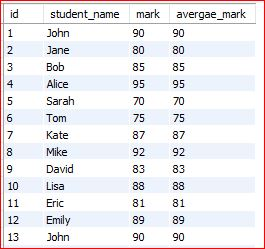

declare i default 1
while i <= 100 do
update from student_marks
set average_mark = (select avg(mark) from student_mark group by student_id )
where student_id = i
set i = i+1
end while
لێرە لە شوێنی ئەوەی خۆمان کۆتا ئایدی بنووسین ، ئەگریگەیت فەنکشنی ماکس بەکاردێنین
بۆ دۆزینەوەی ئەڤرێجەکە و خستنە ناوەوەی بۆ فیلدی ئەڤرێج فیلدەکە یەکسان دەکەی بەو کلاوسەی کە ئەڤرێج مارکمان بۆ دەدۆزێتەوە بۆ هەر قوتابییەک کە بۆ نموونە لەو تەیبلە دەرەجەی ٣ دەرسی تێدایە هەرسێ دەرسەکە دەرەجەکانیان کۆ دەکرێتەوە دابەش ٣ دەکرێت بۆ هەر قوتابیەک
لێرەش ئایدیەکە یەکسان دەکەین بە ڤاریەبلی کاونتەر کە لە ١ەوە دەستپێدەکات تا دەگاتە کۆتا قوتابی
: ئەنجام
لەبەرەوەی دەرەجەی یەک دەرس ئەڤرێجی دەردێت ،دابەشی ١ی دەکات ئەگریگەیت فەنکشنەکە بۆیە ئەنجامی ئەڤرێجەکە وەک دەرەجەکە دەبێت ، بەڵام ئەگەر دوو دەرسبێت کۆی هەردوو دەرسەکە دەکات و دابەش دوویان دەکات ئەگریگەیت فەنکشنەکە پاشان ئەنجامەکە دەخاتە ناو فیلدەکەوە ، دەتوانی بۆ هەر ئایدیێک دەرسێکی تر زیاد بکەیت هەر ئەم کویریەش بەکاربێنەوە بۆ دڵنیابوون لە وەڵامەکە